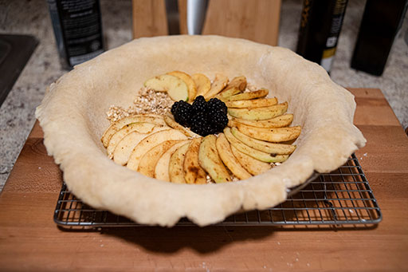
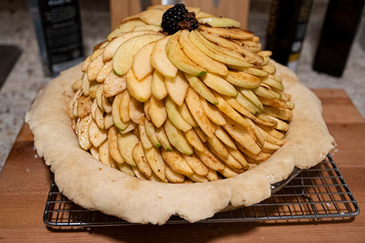
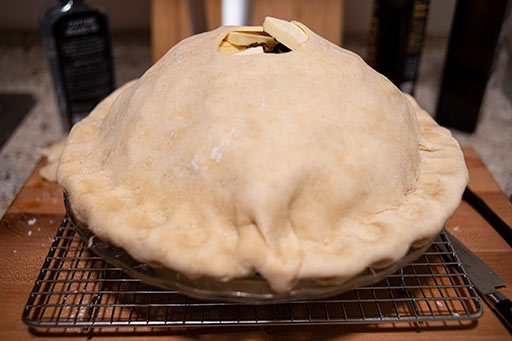
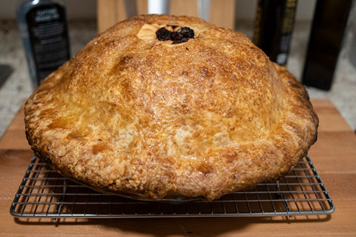
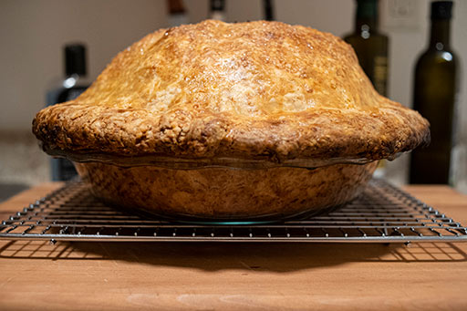
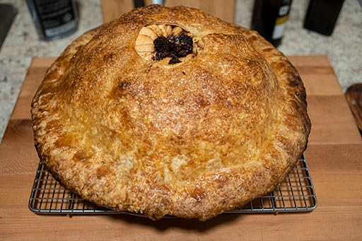

Mix flour with salt and sugar and gruyere cheese. It is worth noting at this point that microplaned gruyere compresses slightly under its own weight. In a tall vessel, 3 cups may be about twice as much cheese as 2 cups. This is fine. Cut butter into 1-tbsp-sized pieces and mix into flour. Using fingers, squash butter pats individually and smear them into the flour, until the remaining pieces of butter are consistently about the size of a US 25¢ coin. You do not want to mix the butter in too well; "pea-sized" is too small.
Add ice water to vinegar until the total amount of liquid is 1/2 cup. That is, make 1/2 cup of liquid, of which 3 tbsp is vinegar and the rest is ice water. Drizzle vinegar-water into dry ingredients, and mix by hand until they just barely come together (a small amount of additional water may be necessary, but not more than 1 tbsp or so). The dough should have some dry bits, and shouldn't quite cohere into a single mass. The cheese should have mostly disappeared, and the dough may seem surprisingly light for a pie crust. Do not work the dough to finish bringing it together. Instead, divide the dough evenly (including roughly an equal amount of dry straggling bits in each portion), and place each half onto a sheet of plastic wrap. For each half, pull the plastic wrap into a ball, using it to bring the dough together, twist until it is tight and no air remains within, and then squish the ball of dough into a round sheet about 3/4 inch thick. Let the two disks of dough rest in a refrigerator for at least an hour (or up to a day) in order to finish hydration.
This pie is made with tart apples of types that stand up well to baking, and includes less sugar than might usually be the case. To counterbalance the tart flavors, I include macerated blackberries. The sweetness of the pie can be controlled by adjusting the quantities of blackberries and lemon juice.
Peel and core the apples, and try to ensure the slices are consistently sized. To aid consistency, I use an 8-slice apple sectioner, and then further subdivide each section into 4 slices, for a total of 24 per apple. Place apple slices and blackberries and 2/3 cup of sugar into a mixing bowl. An 8 quart bowl should be nearly full, and at this point, you should probably be doubting whether 12 apples can really fit into a single pie. Nevertheless, you must go on.
Squeeze the juice of the lemon over the apples, and add cinnamon, salt, cloves, and cardamom. Use a microplane to grate about half of 1 nutmeg over the mixture, and then use it to grate about 1 inch of peeled ginger as well. Add vanilla extract (alternately, if you're feeling fancy, scrape one vanilla bean into a little bit of apple cider and cook it down while whisking, as in this recipe, and then add the resulting liquid to the apples when it has cooled). Mix the filling well and cover it. Allow it to macerate for at least an hour, but preferably several, mixing again every hour.
When the filling has macerated, retrieve one pie crust from the refrigerator, and let it stand for 5-10 minutes to soften. While this happens, in fresh bowl, combine quick oats, 2 tbsp of sugar, and 2 tbsp of milk. Stir with a fork until a wet-sand consistency is reached. Using another fresh bowl, crack the egg, add 2 tbsp cold water, and mix with a fork to make an egg wash.
Using flour liberally, roll out the pie crust to a 14-inch circle, and drop it into a glass pie plate that is 9 or 9.5-inches in diameter and at least 2 inches in depth. It is important that no cracks or separations develop in the pie crust through which juices can escape, so roll carefully. Spread the oat mixture evenly over the bottom of the pie crust. The oats will help to absorb the juices, so that they do not run when the pie is cut.
Now comes the test of your faith. You must put all of the apple mixture into the pie crust. Do not do this haphazardly. Instead, one slice at a time, shingle the apples tightly, working in a spiral around the edge of the crust, one layer upon the next, always in the same direction. Fill the center with berries and thinner apple slices curled into rosettes, and use berries to fill any voids in the shingling. When you reach the rim of the pie crust, you will likely have used a bit more than 1/3 of the filling. Steel yourself and continue, tightening the spiral so that a dome begins to form. This process may take a while.
When, at last, you have consumed all of the solids in your filling mixture, you should find the apple dome stands several inches above the rim of the pie crust. Pour the macerated liquids from the filling mixture through the center of the dome, being careful that none runs out via the shingled apples and over the rim. Slice 3 tbsp of butter into five pieces and place them atop the dome. Brush the rim of the lower crust with the egg-wash mixture that you made previously.
|  |  |
Roll out the second pie crust to a 14-inch circle, and cut steam vents. Once baked, the apples will contract vertically inside the upper crust by about an inch, so I recommend cutting a single, large, circular vent exactly in the center, which will allow the crust to form a self-supporting dome, the vent being its oculus, as in the Pantheon of Rome. Regardless, be careful again that no cracks or separations form in the crust. Drape it atop the apple dome.
Working around the circumference, wrap the lip of the upper crust around and under the lip of the lower crust, trimming the crusts only as necessary. The rim of the pie should thus have three layers: a fold of the upper crust enclosing the lower crust. Using fingers, pinch the fold together, sealing the rim. If you have done well, then the rim should be sufficiently sealed that juices cannot escape in large quantities, even if they rise above the seam. It is important that the rim of the pie crust does not extend beyond the rim of the pie plate.
Now brush the dome of the pie with egg wash and sprinkle liberally with turbinado sugar. The assembled pie should about six inches tall, of which two inches rest within the pie plate. Place the completed pie in the freezer for 1/2 hour. Do not skip or shorten this step: the convex, cheese-infused crust tends to slacken more than a normal pie crust when baked, and if it overhangs the pie plate or goes into the oven too warm, it may actually break or drip onto the oven floor.
|  |  |
While the pie is freezing, preheat the oven to 375°F. When the oven is hot and the pie is cold, you are ready to begin baking. Try to get the center of mass of the pie roughly in the center of the oven. Bake for 2 hours, checking the doneness of the crust periodically. After about 1 hour, both the top and the bottom should become pleasingly browned. When the top is satisfactory, add a foil hat to the pie. When the bottom is satisfactory, insert stainless drip pan into a rack just below the pie, which will both slow the browning of the lower crust, and catch the juices that may begin to escape toward the end of the 2-hour bake. At the end of 2 hours, or when you are satisfied that the pie is done (it should be easy to pierce a skewer through the full depth of the filling), remove it from the oven. Let it cool on a wire rack for 4 hours, or overnight. As the pie cools, the filling should contract slightly, leaving a freestanding dome of crust.
|  |  |